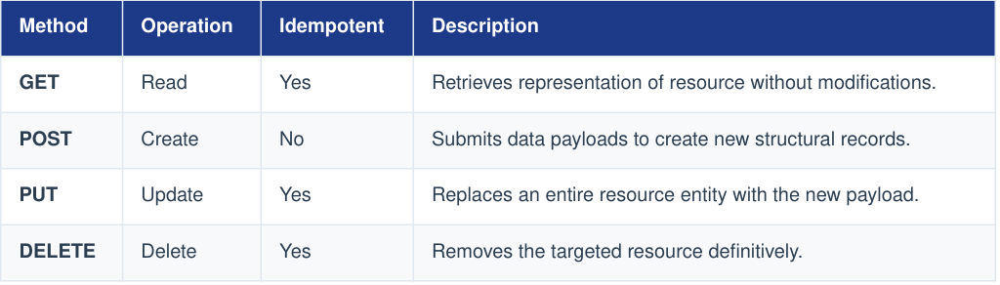
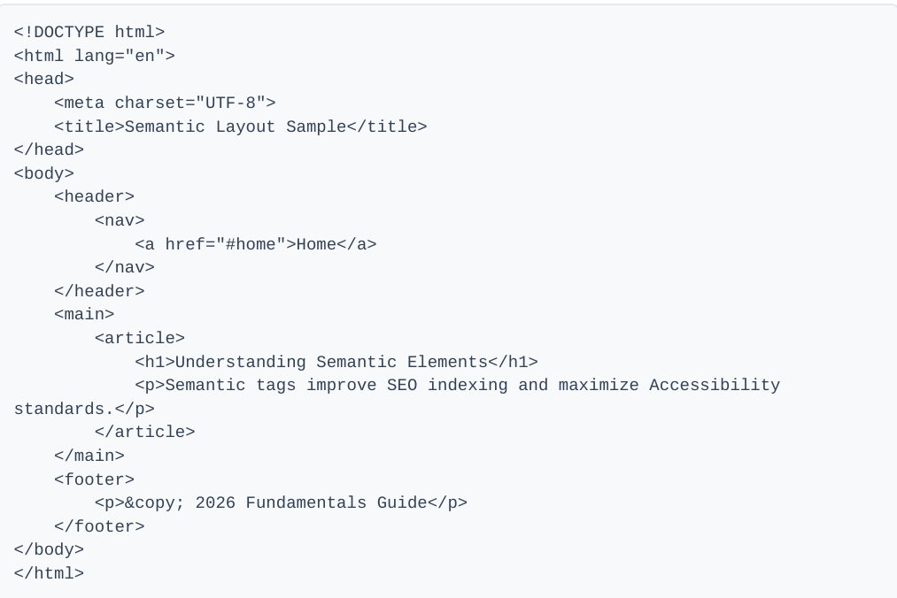
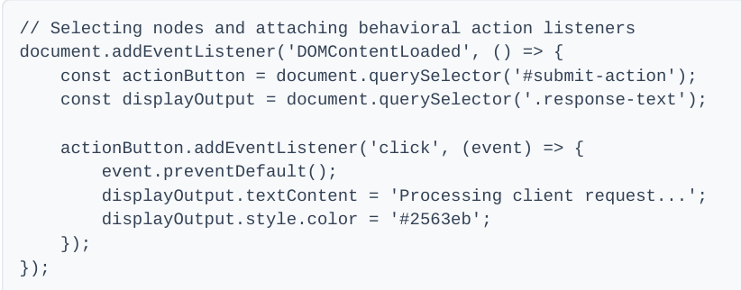
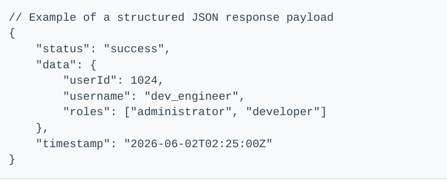

Web Development Course
The field is generally divided into three main areas:
This is everything users actually see and interact with in their web browsers, such as layouts, colors, and menus.
- HTML: Defines the structure and content of the webpage.
- CSS: Controls the styling, visual layout, and responsiveness across different devices.
- JavaScript: Adds interactivity, dynamic content, and complex features to the website.
2. Back-End Development (Server-Side)
This part handles server logic, databases, and application functionality that users don't see directly.
3. Full-Stack Development
This involves working on both front-end and back-end parts of a website.
Chapter #1: The Architecture of the Website
Web development operates on a distributed architectural model where resource consumers (clients) request assets from centralized providers (servers). Understanding this core infrastructure is essential for building scalable, responsive, and secure web applications.
1. The Client-Server Model
Every interaction on the World Wide Web follows the foundational Client-Server paradigm:
- Client(Frontend): The user-facing application interface, typically a web browser (e.g., Chrome, Firefox, Safari). It renders UI components, captures user input, and manages local states.
- Server(Backend): A computer system or cloud instance optimized to process incoming requests, execute business logic, query databases, and return structured payloads.
The Lifecycle of a request
1. User inputs a URL → 2. DNS Resolution translates name to IP → 3. Browser initiates TCP/IP connection → 4. HTTP Request sent → 5. Server processes & returns HTTP Response → 6. Browser renders document.
2. Internet Infrastructure & Protocols
To communicate reliably, machines rely on standardized networking suites and application protocols:
-
IP Addressing & DNS
Every machine on a network has an Internet Protocol address (IPv4 or IPv6). Because numeric strings are unreadable to users, the Domain Name System (DNS) acts as the telephone directory of the web, translating human-readable domains (e.g., example.com ) into operational IP routing targets
-
HTTP/HTTPS Protocol
The Hypertext Transfer Protocol (HTTP) is an application-layer framework governing data formats. It operates via standard request verbs:

HTTP secures this workflow by adding a cryptographic Transport Layer Security (TLS) layer over HTTP, encrypting all communication packets to prevent interception or tampering.
Chapter #2: Frontend Engineering Fundamentals
Web development operates on a distributed architectural model where resource consumers (clients) request assets from centralized providers (servers). Understanding this core infrastructure is essential for building scalable, responsive, and secure web applications.
1. Semantic HTML 5
2. Cascading Style Sheet (CSS3)
Modern Layout Frameworks
HyperText Markup Language (HTML) establishes document hierarchy. Modern web standards emphasize Semantic HTML—using tags that accurately describe the purpose of the enclosed content rather than using generic container structures like generic unstyled divisions.
Code:

Result :
Semantic Layout Sample
Understanding Semantic Elements
Semantic tags improve SEO indexing and maximize Accessibility standards.
2. Cascading Style Sheet (CSS3)
CSS targets DOM structural selections to orchestrate visuals. The core engine is driven by the CSS Box Model, which dictates the space distribution for elements on layout surfaces.
The Box Model Spectrum
Every HTML structural element translates to a rectangular footprint comprising four distinct properties:
- Content: The text or media assets displayed inside the node boundary.
- Padding: Transparent internal space isolating content from borders.
- Border: Decorative line structures tracking margins of padding limits.
- Margin: External protective spacing separating nodes from external entities.
Modern Layout Frameworks
Modern design relies on declarative CSS systems instead of old-fashioned absolute floats:
- Flexbox: One-dimensional alignment engine optimal for component toolbars, menus, and localized structural alignments.
- CSS Grid: Multi-dimensional structural layout engine providing predictable structural row and column scaffolding across wide dynamic views.
JavaScript (ECMAScript standards) transforms static documents into interactive interfaces. It maps elements into an addressable object hierarchy known as the Document Object Model (DOM)

Chapter #3: Backend & Data Management Architecture
The backend abstracts business implementations, provides secure access control boundaries, and maintains global state records through persistence databases.
1. Server Logic FoundationsWhen clients transmit requests, backend logic determines processing workflows. Applications run inside custom container execution nodes, processing data through functional pipelines:
- Routing: Parsing URL expressions to map execution workflows to targeted controllers.
- State Orchestration: Validating structural fields, authentication tokens, and calculating conditional logic pathways.
Representational State Transfer (REST) provides reliable communication guidelines for networks. APIs are stateless interfaces designed to exchange structured representations (typically JSON formats).

APIs use standard HTTP verbs to represent actions. When designing an API, endpoints are structured using plural nouns to represent resource collections.
3. Database SystemApplication states require persistent engines to survive process termination cycles. These environments split into two standard categories:
Relational Databases (SQL)Systems like PostgreSQL, MySQL, and SQL Server organize records into strict, predefined structural tables. They guarantee transaction safety through explicit compliance mechanisms:
- Atomicity: Ensuring operations within a transaction commit successfully or roll back completely.
- Consistency: Validating that changes across entities obey system rules.
- Isolation: Validating that changes across entities obey system rules.
- Durability: Guaranteeing committed alterations survive system failures.
Engines like MongoDB use highly flexible document object schemas (BSON/JSON layouts) instead of fixed schemas, offering rapid read and write horizontal scaling for massive unstructured datasets.
Or you can download the Pdf files here.